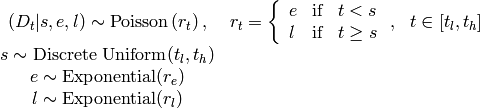
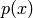
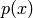
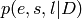
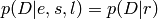
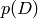
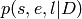
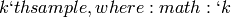
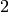

Consider the following dataset, which is a time series of recorded coal mining disasters in the UK from 1851 to 1962 [Jarrett:1979].

Number of mining disasters each year in the UK.
Occurrences of disasters in the time series is thought to be derived from a Poisson process with a large rate parameter in the early part of the time series, and from one with a smaller rate in the later part. We are interested in locating the change point in the series, which perhaps is related to changes in mining safety regulations.
We represent our conceptual model formally as a statistical model:
(1)
The symbols are defined as:
 ..
.. : The year in which the rate parameter changes (the switchpoint).
: The year in which the rate parameter changes (the switchpoint). : The rate parameter before the switchpoint .
: The rate parameter before the switchpoint . : The rate parameter after the switchpoint ..
: The rate parameter after the switchpoint .. : The rate parameters of the priors of the early and late rates, respectively.
: The rate parameters of the priors of the early and late rates, respectively.Because we have defined  by its dependence on ,
and , the latter three are known as the ‘parents’ of
and is called their ‘child’. Similarly, the parents of
are and , and is the child of
and .
by its dependence on ,
and , the latter three are known as the ‘parents’ of
and is called their ‘child’. Similarly, the parents of
are and , and is the child of
and .
At the model-specification stage (before the data are observed), ,
, ,  and are all random variables. Bayesian
‘random’ variables have not necessarily arisen from a physical random process.
The Bayesian interpretation of probability is epistemic, meaning random
variable
and are all random variables. Bayesian
‘random’ variables have not necessarily arisen from a physical random process.
The Bayesian interpretation of probability is epistemic, meaning random
variable  ‘s probability distribution  represents our
knowledge and uncertainty about ‘s value. Candidate values of
for which is high are relatively more probable, given what we know.
Random variables are represented in PyMC by the classes Stochastic and
Deterministic.
‘s probability distribution  represents our
knowledge and uncertainty about ‘s value. Candidate values of
for which is high are relatively more probable, given what we know.
Random variables are represented in PyMC by the classes Stochastic and
Deterministic.
The only Deterministic in the model is . If we knew the values of
‘s parents (, and ), we could compute the
value of exactly. A Deterministic like is defined by a
mathematical function that returns its value given values for its parents. The
nomenclature is a bit confusing, because these objects usually represent random
variables; since the parents of are random, is random also.
A more descriptive (though more awkward) name for this class would be
DeterminedByValuesOfParents.
On the other hand, even if the values of the parents of variables ,
(before observing the data), or were known, we
would still be uncertain of their values. These variables are characterized by
probability distributions that express how plausible their candidate values are,
given values for their parents. The Stochastic class represents these
variables. A more descriptive name for these objects might be
RandomEvenGivenValuesOfParents.
We can represent model (1) in a file called DisasterModel.py as follows. First, we import the PyMC and NumPy namespaces:
from pymc import DiscreteUniform, Exponential, deterministic, Poisson, Uniform
import numpy as np
Notice that from pymc we have only imported a select few objects that are needed for this particular model, whereas the entire numpy namespace has been imported, and conveniently given a shorter name. Objects from NumPy are subsequently accessed by prefixing np. to the name. Either approach is acceptable.
Next, we enter the actual data values into an array:
disasters_array = np.array([ 4, 5, 4, 0, 1, 4, 3, 4, 0, 6, 3, 3, 4, 0, 2, 6,
3, 3, 5, 4, 5, 3, 1, 4, 4, 1, 5, 5, 3, 4, 2, 5,
2, 2, 3, 4, 2, 1, 3, 2, 2, 1, 1, 1, 1, 3, 0, 0,
1, 0, 1, 1, 0, 0, 3, 1, 0, 3, 2, 2, 0, 1, 1, 1,
0, 1, 0, 1, 0, 0, 0, 2, 1, 0, 0, 0, 1, 1, 0, 2,
3, 3, 1, 1, 2, 1, 1, 1, 1, 2, 4, 2, 0, 0, 1, 4,
0, 0, 0, 1, 0, 0, 0, 0, 0, 1, 0, 0, 1, 0, 1])
Next, we create the switchpoint variable :
s = DiscreteUniform('s', lower=0, upper=110, doc='Switchpoint[year]')
DiscreteUniform is a subclass of Stochastic that represents uniformly-
distributed discrete variables. Use of this distribution suggests that we have
no preference a priori regarding the location of the switchpoint; all values
are equally likely. Now we create the exponentially-distributed variables
and for the early and late Poisson rates, respectively:
e = Exponential('e', beta=1)
l = Exponential('l', beta=1)
Next, we define the variable , which selects the early rate
for times before and the late rate for times after
. We create using the deterministic decorator, which
converts the ordinary Python function into a Deterministic object.
@deterministic(plot=False)
def r(s=s, e=e, l=l):
""" Concatenate Poisson means """
out = np.empty(len(disasters_array))
out[:s] = e
out[s:] = l
return out
The last step is to define the number of disasters . This is a
stochastic variable, but unlike , and we have
observed its value. To express this, we set the argument observed to
True (it is set to False by default). This tells PyMC that this object’s
value should not be changed:
D = Poisson('D', mu=r, value=disasters_array, observed=True)
Since it is represented by a Stochastic object, is defined by its
dependence on its parent even though its value is fixed. This isn’t
just a quirk of PyMC’s syntax; Bayesian hierarchical notation itself makes no
distinction between random variables and data. The reason is simple: to use
Bayes’ theorem to compute the posterior  of model
(1), we require the likelihood . Even
though ‘s value is known and fixed, we need to formally assign it a
probability distribution as if it were a random variable. Remember, the
likelihood and the probability function are essentially the same, except that
the former is regarded as a function of the parameters and the latter as a
function of the data.
This point can be counterintuitive at first, as many peoples’ instinct is to
regard data as fixed a priori and unknown variables as dependent on the data.
One way to understand this is to think of statistical models like
((1)) as predictive models for data, or as models of the
processes that gave rise to data. Before observing the value of , we
could have sampled from its prior predictive distribution  (i.e.
the marginal distribution of the data) as follows:
, and from their priors. conditional on these values.Even after we observe the value of , we need to use this process model
to make inferences about , and because its the only
information we have about how the variables are related.
We have above created a PyMC probability model, which is simply a linked
collection of variables. To see the nature of the links, import or run
DisasterModel.py and examine ‘s parents attribute from the
Python prompt:
>>> s.parents
>>> {'lower': 0, 'upper': 110}
The parents dictionary shows us the distributional parameters of ,
which are constants. Now let’s examinine ‘s parents:
>>> D.parents
>>> {'mu': <pymc.PyMCObjects.Deterministic 'r' at 0x3e51a70>}
We are using as a distributional parameter of (i.e.
is ‘s parent). internally labels as
mu, meaning plays the role of the rate parameter in ‘s
Poisson distribution. Now examine ‘s children attribute:
>>> r.children
>>> set([<pymc.distributions.Poisson 'D' at 0x3e51290>])
Because considers its parent, considers
its child. Unlike parents, children is a set (an unordered collection of
objects); variables do not associate their children with any particular
distributional role. Try examining the parents and children attributes
of the other parameters in the model.
The following ‘directed acyclic graph’ is a visualization of the parent-child
relationships in the model. Unobserved stochastic variables ,
and are open ellipses, observed stochastic variable is a
filled ellipse and deterministic variable is a triangle. Arrows point
from parent to child and display the label that the child assigns to the parent.
See section Graphing models for more details.
Warning
Missing image.
All PyMC variables have an attribute called value that stores the current
value of that variable. Try examining ‘s value, and you’ll see the
initial value we provided for it:
>>> D.value
>>>
array([4, 5, 4, 0, 1, 4, 3, 4, 0, 6, 3, 3, 4, 0, 2, 6, 3, 3, 5, 4, 5, 3, 1,
4, 4, 1, 5, 5, 3, 4, 2, 5, 2, 2, 3, 4, 2, 1, 3, 2, 2, 1, 1, 1, 1, 3,
0, 0, 1, 0, 1, 1, 0, 0, 3, 1, 0, 3, 2, 2, 0, 1, 1, 1, 0, 1, 0, 1, 0,
0, 0, 2, 1, 0, 0, 0, 1, 1, 0, 2, 3, 3, 1, 1, 2, 1, 1, 1, 1, 2, 4, 2,
0, 0, 1, 4, 0, 0, 0, 1, 0, 0, 0, 0, 0, 1, 0, 0, 1, 0, 1])
If you check ‘s, ‘s and ‘s values, you’ll see random
initial values generated by PyMC:
>>> s.value
>>> 44
>>> e.value
>>> 0.33464706250079584
>>> l.value
>>> 2.6491936762267811
Of course, since these are Stochastic elements, your values will be
different than these. If you check ‘s value, you’ll see an array whose
first elements are (here 0.33464706), and whose remaining
elements are (here 2.64919368):
>>> r.value
>>>
array([ 0.33464706, 0.33464706, 0.33464706, 0.33464706, 0.33464706,
0.33464706, 0.33464706, 0.33464706, 0.33464706, 0.33464706,
0.33464706, 0.33464706, 0.33464706, 0.33464706, 0.33464706,
0.33464706, 0.33464706, 0.33464706, 0.33464706, 0.33464706,
0.33464706, 0.33464706, 0.33464706, 0.33464706, 0.33464706,
0.33464706, 0.33464706, 0.33464706, 0.33464706, 0.33464706,
0.33464706, 0.33464706, 0.33464706, 0.33464706, 0.33464706,
0.33464706, 0.33464706, 0.33464706, 0.33464706, 0.33464706,
0.33464706, 0.33464706, 0.33464706, 0.33464706, 2.64919368,
2.64919368, 2.64919368, 2.64919368, 2.64919368, 2.64919368,
2.64919368, 2.64919368, 2.64919368, 2.64919368, 2.64919368,
2.64919368, 2.64919368, 2.64919368, 2.64919368, 2.64919368,
2.64919368, 2.64919368, 2.64919368, 2.64919368, 2.64919368,
2.64919368, 2.64919368, 2.64919368, 2.64919368, 2.64919368,
2.64919368, 2.64919368, 2.64919368, 2.64919368, 2.64919368,
2.64919368, 2.64919368, 2.64919368, 2.64919368, 2.64919368,
2.64919368, 2.64919368, 2.64919368, 2.64919368, 2.64919368,
2.64919368, 2.64919368, 2.64919368, 2.64919368, 2.64919368,
2.64919368, 2.64919368, 2.64919368, 2.64919368, 2.64919368,
2.64919368, 2.64919368, 2.64919368, 2.64919368, 2.64919368,
2.64919368, 2.64919368, 2.64919368, 2.64919368, 2.64919368,
2.64919368, 2.64919368, 2.64919368, 2.64919368, 2.64919368])
To compute its value, calls the funtion we used to create it, passing
in the values of its parents.
Stochastic objects can evaluate their probability mass or density functions
at their current values given the values of their parents. The logarithm of a
stochastic object’s probability mass or density can be accessed via the logp
attribute. For vector-valued variables like , the logp attribute
returns the sum of the logarithms of the joint probability or density of all
elements of the value. Try examining ‘s and ‘s log-
probabilities and ‘s and ‘s log-densities:
>>> s.logp
>>> -4.7095302013123339
>>> D.logp
>>> -1080.5149888046033
>>> e.logp
>>> -0.33464706250079584
>>> l.logp
>>> -2.6491936762267811
Stochastic objects need to call an internal function to compute their
logp attributes, as needed to call an internal function to compute
its value. Just as we created by decorating a function that computes
its value, it’s possible to create custom Stochastic objects by decorating
functions that compute their log-probabilities or densities (see chapter
Building models). Users are thus not limited to the set of of
statistical distributions provided by PyMC.
Let’s take a closer look at our definition of :
@deterministic(plot=False)
def r(s=s, e=e, l=l):
""" Concatenate Poisson means """
out = np.empty(len(disasters_array))
out[:s] = e
out[s:] = l
return out
The arguments , and are Stochastic objects, not
numbers. Why aren’t errors raised when we attempt to slice array out up to a
Stochastic object?
Whenever a variable is used as a parent for a child variable, PyMC replaces it
with its value attribute when the child’s value or log-probability is
computed. When ‘s value is recomputed, s.value is passed to the
function as argument s. To see the values of the parents of all
together, look at r.parents.value.
PyMC provides several objects that fit probability models (linked collections of variables) like ours. The primary such object, MCMC, fits models with the Markov chain Monte Carlo algorithm. See appendix chap:mcmc for an introduction to the algorithm itself. To create an MCMC object to handle our model, import DisasterModel.py and use it as an argument for MCMC:
import DisasterModel
from pymc import MCMC
M = MCMC(DisasterModel)
In this case M will expose variables s, e, l, r and D as attributes; that is, M.s will be the same object as DisasterModel.s.
To run the sampler, call the MCMC object’s isample() (or sample()) method with arguments for the number of iterations, burn-in length, and thinning interval (if desired):
M.isample(iter=10000, burn=1000, thin=10)
After a few seconds, you should see that sampling has finished normally. The model has been fitted.
‘Fitting’ a model means characterizing its posterior distribution somehow. In
this case, we are trying to represent the posterior  by a set
of joint samples from it. To produce these samples, the MCMC sampler randomly
updates the values of , and according to the
Metropolis-Hastings algorithm ([Gelman et al., 2004]_) for iter iterations.
After a sufficiently large number of iterations, the current values of
, and can be considered a sample from the
posterior. PyMC assumes that the burn parameter specifies a ‘sufficiently
large’ number of iterations for convergence of the algorithm, so it is up to the
user to verify that this is the case (see chapter chap:modelchecking).
Consecutive values sampled from , and are
necessarily dependent on the previous sample, since it is a Markov chain.
However, MCMC often results in strong autocorrelation among samples that can
result in imprecise posterior inference. To circumvent this, it is often
effective to thin the sample by only retaining every  is an integer value. This thinning interval is passed to the sampler
via the thin argument.
If you are not sure ahead of time what values to choose for the burn and thin parameters, you may want to retain all the MCMC samples, that is to set burn=0 and thin=1, and then discard the ‘burnin period’ and thin the samples after examining the traces (the series of samples). See [Gelman et al., 2004]_ for general guidance.
The output of the MCMC algorithm is a ‘trace’, the sequence of retained samples for each variable in the model. These traces can be accessed using the trace(name, chain=-1) method. For example:
>>> M.trace('s')[:]
array([41, 40, 40, ..., 43, 44, 44])
The trace slice [start:stop:step] works just like the NumPy array slice. By default, the returned trace array contains the samples from the last call to sample, that is, chain=-1, but the trace from previous sampling runs can be retrieved by specifying the correspondent chain index. To return the trace from all chains, simply use chain=None. [1]
You can examine the marginal posterior of any variable by plotting a histogram of its trace:
>>> from pylab import hist, show
>>> hist(M.trace('l')[:])
>>>
(array([ 8, 52, 565, 1624, 2563, 2105, 1292, 488, 258, 45]),
array([ 0.52721865, 0.60788251, 0.68854637, 0.76921023, 0.84987409,
0.93053795, 1.01120181, 1.09186567, 1.17252953, 1.25319339]),
<a list of 10 Patch objects>)
>>> show()
You should see something like this:
PyMC has its own plotting functionality, via the optional matplotlib module as noted in the installation notes. The Matplot module includes a plot function that takes the model (or a single parameter) as an argument:
>>> from pymc.Matplot import plot
>>> plot(M)
For each variable in the model, plot generates a composite figure, such as this one for the switchpoint in the disasters model:
The left-hand pane of this figure shows the temporal series of the samples from
, while the right-hand pane shows a histogram of the trace. The trace
is useful for evaluating and diagnosing the algorithm’s performance (see
[Gelman et al., 2004]_), while the histogram is useful for visualizing the posterior.
For a non-graphical summary of the posterior, simply call M.stats().
As with most “textbook examples”, the models we have examined so far assume that the associated data are complete. That is, there are no missing values corresponding to any observations in the dataset. However, many real-world datasets contain one or more missing values, usually due to some logistical problem during the data collection process. The easiest way of dealing with observations that contain missing values is simply to exclude them from the analysis. However, this results in loss of information if an excluded observation contains valid values for other quantities. An alternative is to impute the missing values, based on information in the rest of the model.
For example, consider a survey dataset for some wildlife species:
| Count | Site | Observer | Temperature |
|---|---|---|---|
| 15 | 1 | 1 | 15 |
| 10 | 1 | 2 | NA |
| 6 | 1 | 1 | 11 |
Each row contains the number of individuals seen during the survey, along with three covariates: the site on which the survey was conducted, the observer that collected the data, and the temperature during the survey. If we are interested in modelling, say, population size as a function of the count and the associated covariates, it is difficult to accommodate the second observation because the temperature is missing (perhaps the thermometer was broken that day). Ignoring this observation will allow us to fit the model, but it wastes information that is contained in the other covariates.
In a Bayesian modelling framework, missing data are accommodated simply by
treating them as unknown model parameters. Values for the missing data
 are estimated naturally, using the posterior predictive
distribution:
are estimated naturally, using the posterior predictive
distribution:

This describes additional data , which may either be considered
unobserved data or potential future observations. We can use the posterior
predictive distribution to model the likely values of missing data.
Consider the coal mining disasters data introduced previously. Assume that two years of data are missing from the time series; we indicate this in the data array by the use of an arbitrary placeholder value, -999.
x = numpy.array([ 4, 5, 4, 0, 1, 4, 3, 4, 0, 6, 3, 3, 4, 0, 2, 6,
3, 3, 5, 4, 5, 3, 1, 4, 4, 1, 5, 5, 3, 4, 2, 5,
2, 2, 3, 4, 2, 1, 3, -999, 2, 1, 1, 1, 1, 3, 0, 0,
1, 0, 1, 1, 0, 0, 3, 1, 0, 3, 2, 2, 0, 1, 1, 1,
0, 1, 0, 1, 0, 0, 0, 2, 1, 0, 0, 0, 1, 1, 0, 2,
3, 3, 1, -999, 2, 1, 1, 1, 1, 2, 4, 2, 0, 0, 1, 4,
0, 0, 0, 1, 0, 0, 0, 0, 0, 1, 0, 0, 1, 0, 1])
To estimate these values in PyMC, we generate a masked array. These are specialised NumPy arrays that contain a matching True or False value for each element to indicate if that value should be excluded from any computation. Masked arrays can be generated using NumPy’s ma.masked_equal function:
>>> masked_data = numpy.ma.masked_equal(x, value=-999)
>>> masked_data
masked_array(data = [4 5 4 0 1 4 3 4 0 6 3 3 4 0 2 6 3 3 5 4 5 3 1 4 4 1 5 5 3
4 2 5 2 2 3 4 2 1 3 -- 2 1 1 1 1 3 0 0 1 0 1 1 0 0 3 1 0 3 2 2 0 1 1 1 0 1 0
1 0 0 0 2 1 0 0 0 1 1 0 2 3 3 1 -- 2 1 1 1 1 2 4 2 0 0 1 4 0 0 0 1 0 0 0 0 0 1
0 0 1 0 1],
mask = [False False False False False False False False False False False False
False False False False False False False False False False False False
False False False False False False False False False False False False
False False False True False False False False False False False False
False False False False False False False False False False False False
False False False False False False False False False False False False
False False False False False False False False False False False True
False False False False False False False False False False False False
False False False False False False False False False False False False
False False False],
fill_value=999999)
This masked array, in turn, can then be passed to PyMC’s own ImputeMissing function, which replaces the missing values with Stochastic variables of the desired type. For the coal mining disasters problem, recall that disaster events were modelled as Poisson variates:
>>> D = ImputeMissing('D', Poisson, masked_data, mu=r)
>>> D
[<pymc.distributions.Poisson 'D[0]' at 0x4ba42d0>,
<pymc.distributions.Poisson 'D[1]' at 0x4ba4330>,
<pymc.distributions.Poisson 'D[2]' at 0x4ba44d0>,
<pymc.distributions.Poisson 'D[3]' at 0x4ba45f0>,
...
<pymc.distributions.Poisson 'D[110]' at 0x4ba46d0>]
Here is an array of means for each year of data, allocated according
to the location of the switchpoint. Each element in is a Poisson
Stochastic, irrespective of whether the observation was missing or not. The
difference is that actual observations are data Stochastics (observed=True),
while the missing values are non-data Stochastics. The latter are considered
unknown, rather than fixed, and therefore estimated by the MCMC algorithm, just
as unknown model parameters.
The entire model looks very similar to the original model:
# Switchpoint
s = DiscreteUniform('s', lower=0, upper=110)
# Early mean
e = Exponential('e', beta=1)
# Late mean
l = Exponential('l', beta=1)
@deterministic(plot=False)
def r(s=s, e=e, l=l):
"""Allocate appropriate mean to time series"""
out = np.empty(len(disasters_array))
# Early mean prior to switchpoint
out[:s] = e
# Late mean following switchpoint
out[s:] = l
return out
# Where the mask is true, the value is taken as missing.
masked_data = np.ma.masked_array(disasters_array, disasters_mask)
D = ImputeMissing('D', Poisson, masked_data, mu=r)
The main limitation of this approach for imputation is performance. Because each element in the data array is modelled by an individual Stochastic, rather than a single Stochastic for the entire array, the number of nodes in the overall model increases from 4 to 113. This significantly slows the rate of sampling, since the model iterates over each node at every iteration.

Trace and posterior distribution of the second missing data point in the example.
MCMC objects handle individual variables via step methods, which determine how
parameters are updated at each step of the MCMC algorithm. By default, step
methods are automatically assigned to variables by PyMC. To see which step
methods  is using, look at its step_method_dict attribute with
respect to each parameter:
is using, look at its step_method_dict attribute with
respect to each parameter:
>>> M.step_method_dict[s]
>>> [<pymc.StepMethods.DiscreteMetropolis object at 0x3e8cb50>]
>>> M.step_method_dict[e]
>>> [<pymc.StepMethods.Metropolis object at 0x3e8cbb0>]
>>> M.step_method_dict[l]
>>> [<pymc.StepMethods.Metropolis object at 0x3e8ccb0>]
The value of step_method_dict corresponding to a particular variable is a
list of the step methods is using to handle that variable.
You can force to use a particular step method by calling
M.use_step_method before telling it to sample. The following call will cause
to handle with a standard Metropolis step method, but
with proposal standard deviation equal to :
M.use_step_method(Metropolis, l, proposal_sd=2.)
Another step method class, AdaptiveMetropolis, is better at handling highly- correlated variables. If your model mixes poorly, using AdaptiveMetropolis is a sensible first thing to try.
That was a brief introduction to basic PyMC usage. Many more topics are covered in the subsequent sections, including:
Also, be sure to check out the documentation for the Gaussian process extension, which is available on the webpage.
Footnotes
| [1] | Note that the unknown variables , , and
will all accrue samples, but will not because its value has been
observed and is not updated. Hence has no trace and calling
M.trace('D')[:] will raise an error. |